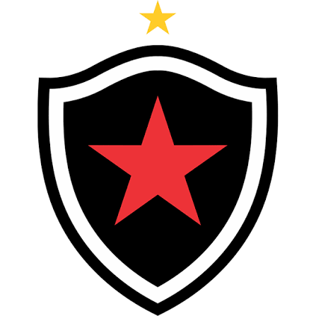

Conheça o Belo
O Botafogo-PB é um clube de futebol da cidade de João Pessoa, na Paraíba.
O clube foi fundado em .
Em 2026, o Botafogo-PB conquistou novamente o Campeonato Paraibano e chegou ao seu 31º título estadual.
O Belo da Paraíba
O Botafogo-PB é um clube de futebol da cidade de João Pessoa, na Paraíba.
O clube foi fundado em .
Em 2026, o Botafogo-PB conquistou novamente o Campeonato Paraibano e chegou ao seu 31º título estadual.

| Botafogo-PB | |
|---|---|
| Fundação | 1931 |
| Estado | Paraíba |
| Estádio | Almeidão |